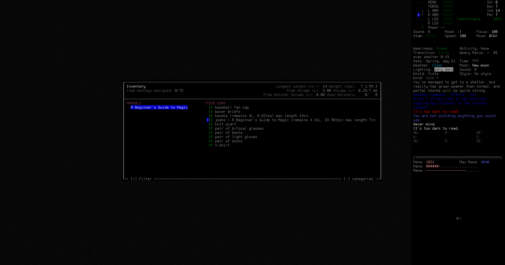
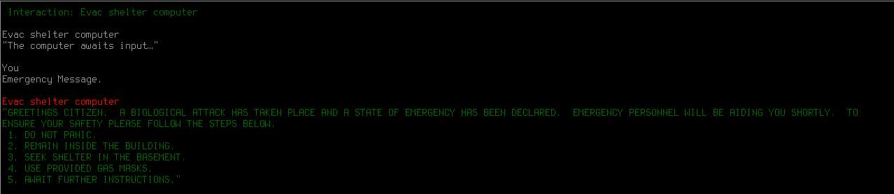
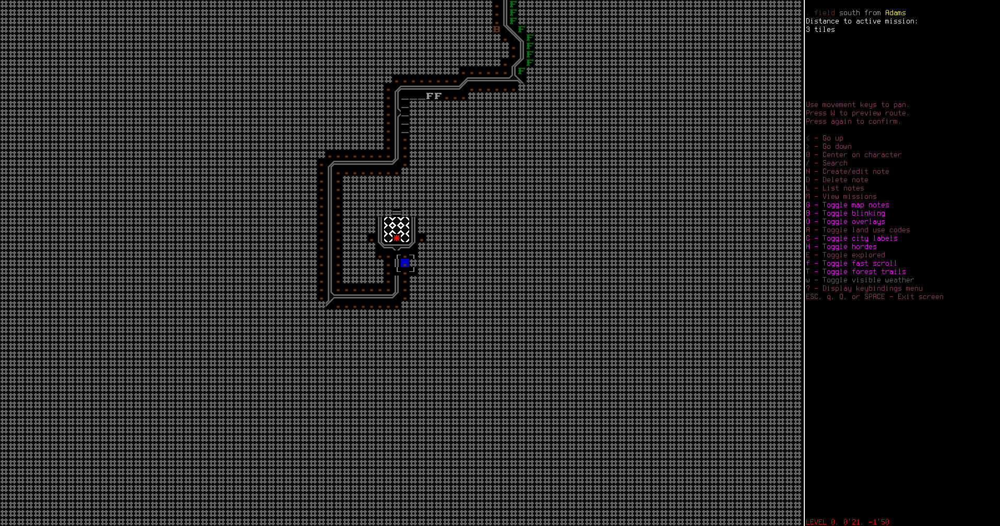
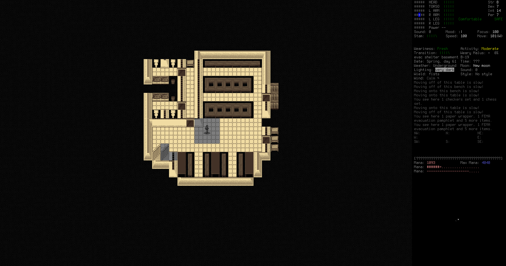
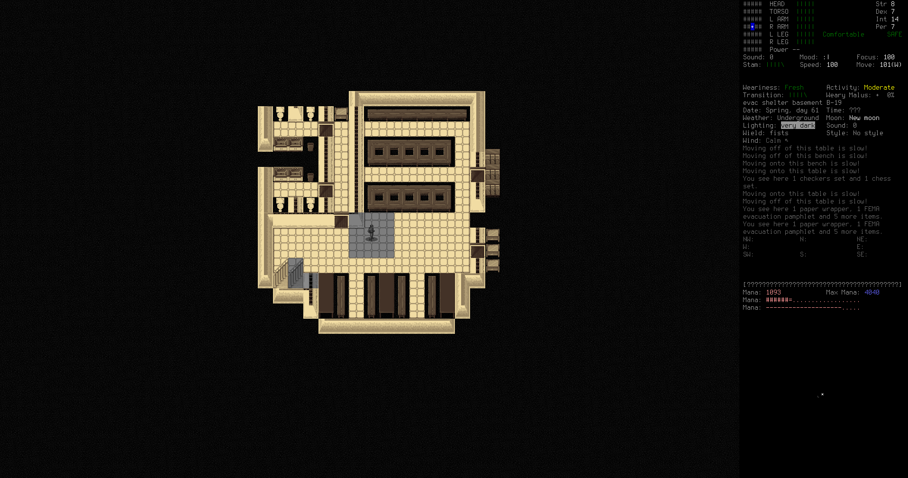
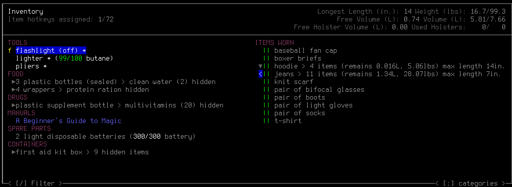

I'm starting a new Cataclysm: Dark Days Ahead (CDDA) game, and I thought'd be cool to document my adventures. Maybe it'll force me to play more thoughtfully, not falling victim to that classic killer of permadeath roguelikes: Hubris.
Cataclysm: Dark Days Ahead is a turn-based survival game set in a post-apocalyptic world. Struggle to survive in a harsh, persistent, procedurally generated world. Scavenge the remnants of a dead civilization for food, equipment, or, if you are lucky, a vehicle with a full tank of gas to get you the hell out of Dodge. Fight to defeat or escape from a wide variety of powerful monstrosities, from zombies to giant insects to killer robots and things far stranger and deadlier, and against the others like yourself, that want what you have…
Even without mods, CDDA has an incredible world and set of experiences, but I want to spice things up even more with some magic! I'll be using two of the most popular mods: Arcana and Magic Items by chaosvolt, which is not included with the game, and Magiclysm which is included with the game, so you don't need to download anything extra, just enable it.
Our guy is Raymon Ortega, Would-be Wizard. He's extremely smart—which will be important for using magic—but is lacking in physical capability and is a bit flimsy. He's also pretty short.

As you can see from the character creation screen, there's quite a bit going on. I'll run through the important stuff.
- Strength: How tough you are and how much stuff you can carry. Raymon's got 8, so he's completely average. This might cause us problems later.
- Dexterity: Helps with dodging, ranged weapons, etc. 7 is below average but ok.
- Intelligence: Helps with reading books to learn stuff and with magic. We've got 14, which is extremely good.
- Perception: Helps with critical hits, ranged weapons, avoiding traps, etc. Like dexterity, we've got 7, which is ok but not great.
- Bookworm: Raymon loves reading! Reading makes him happy, and he gets much less upset than most people if he has to read dry textbooks or technical manuals.
- Fast Reader: Raymon gets through books really quickly. This, plus his high intelligence, means books will be a breeze to read.
- Light Step: We'll be a little better at sneaking around.
- Mana Efficiency, Regeneration, Sensitivity: Raymon has a lot of mana, used for casting magic, and it regenerates quickly.
- Far-Sighted & Near-Sighted: Raymon needs bifocal glasses or he'll suffer vision penalties. Fortunantely, we start with a pair.
- Flimsy: Raymon has 25% less hitpoints than usual. This is bad.
- Poor Hearing: Noises are less noticable. This might be a problem if we can't hear the zombie shuffling around in the next room.
- Squeamish: Raymon can't put on filthy clothes. This is hardly even a penalty, just free points for character creation.
- Truth Teller: It's hard to tell lies to NPCs, but we probably won't need to tell any anyway.
Raymon's initial skills are all in the crafting skills: fabrication, tailoring, etc. which will give us a bit of a leg up as we start to craft before we get books.

You've managed to get to a shelter, but reality has grown weaker than normal, and portal storms will be quite strong.
Here we are in the evacuation shelter set up by the Department of Emergency Management before the apocalpyse. We're safe, for now, but the rest of the world has gone down the drain faster than a wedding ring. It is morning, Spring, day 61.

Can't see much in the dark, but there's a computer over in the corner there.

We also know a bit about the area where we are. The map can be a bit hard to read, but in the middle is our evacuation shelter. There's a big dump a little ways to the west, and some roads, forest (green F), swamp (cyan F), and a river (blue R), but no other civilization.
We start out with some basic clothes, a hoodie (this is nice!), jeans, boots (these are also nice!), and A Beginner's Guide to Magic in our jeans pocket.

A Beginner's Guide to Magic is a spell book, and it provides some really basic but also really useful spells. This will be our introduction to wizardry.
Now let's go check out the computer, and see what it's got for us.
There's some instructions for all the panicked evacuees:
- DO NOT PANIC.
- REMAIN INSIDE THE BUILDING.
- SEEK SHELTER IN THE BASEMENT.
- USE PROVIDED GAS MASKS.
- AWAIT FURTHER INSTRUCTIONS.
A decent set of instructions, but only if the government was still coming to help. They're not. There is no government now. I'll try contacting them anyway.

Trying to contact the Department of Emergency Management gives us directions to the nearest Refugee Center, a much bigger place than this little evaucation shelter. We make a note of the location so it will be visible on our map.
It's really far away, over 250 map tiles to the northwest. There's a long winding road leading there, but it leads all over the place and through cities. We do get a peek at the rest of the map though.

There's a big city nearby, Weld, and a some dirt roads in the nearby forest to the east that could be interesting to check out. But first, let's explore the rest of the evac shelter and see what we can scavenge.
 

Raymon took a walk outside and slipped down into the basement too. The evac shelter is pretty small. There's a few bottles of water and some protein rations in the lockers and cupboards, some empty flashlights, soap, vinegar, bleach. There aren't any of the promised gas masks, and there's nobody else here.
I grabbed some of the most useful things from around the shelter. Some food and water, for starters, then a flashlight, a lighter, and a pair of pliers. The multivitamins and first aid kit will be helpful to keep me alive in the future. I can always come back for the rest of the food and water, but if I get stuck somewhere I need to have a bit with me. There's not a lot else in the shelter.
Raymon needs some goals now, both in the short term, and in the long term. So, in the short term, Raymon wants to get a reliable water supply, a stock of food, and a decent shelter. In the long term, Raymon wants to reach the refugee center and see if there's any safety there. The world has become an extremely hostile place, so it will take all his ingenuity and newfound arcane knowledge, but he just might make it.